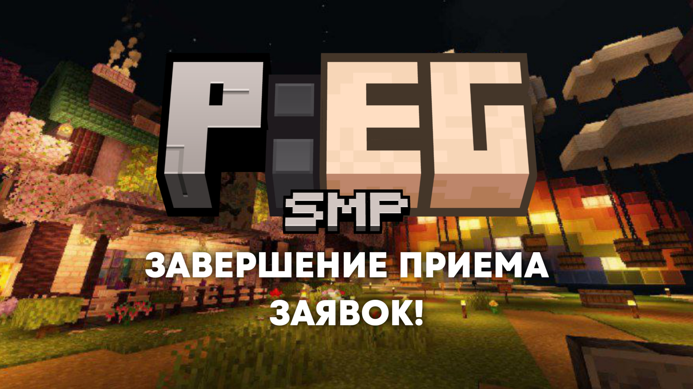
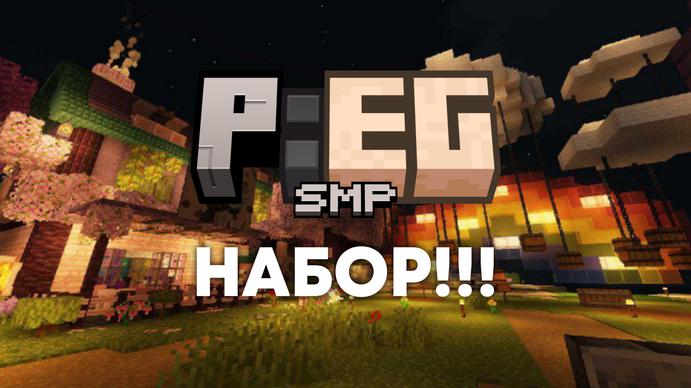
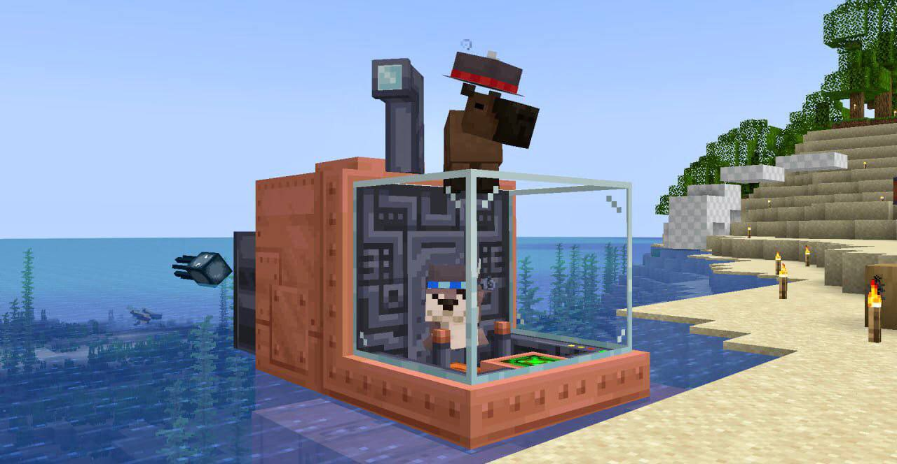
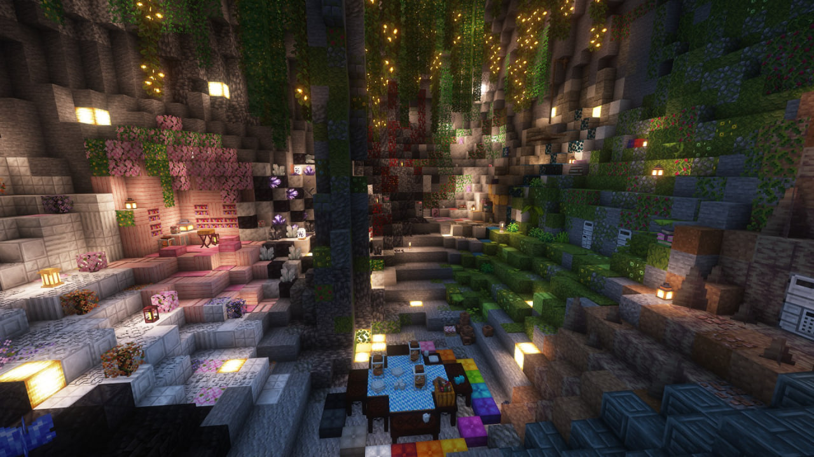

PEGsmp
PEGsmp ролевой сервер на версии 1.20.1. На сервере множество модов, но главной фишкой являются наши дорогие яйца, идея которых была вдохновлена с сервера qsmp! Дружелюбные и ответственные админы, которые всегда рады помочь, продвигают этот сервер, тратя на него уйму времени!
На сервере присутствует множество интересных модов, к примеру: Alex’s caves, Botania, Born in Chaos и другие.
Не стоящий на месте интересный лор, который вы можете отслеживать на твиче наших участников или в их личных телеграмм каналах!
Новости
Отдельная благодарность за помощь в организации и проведению набора, а также в организации ивента нашему главному админа по лору - Луку! Ну и как вы поняли Панчо отыгрывает именно она.
А ещё на сервере в пике было 38-40 человек онлайна и это рекорд, надо сказать что сервер лагал но выдержал и это круто!
Главный админ по технической части сервера Моддер.
23.06.2024, 21:50
Когда чуть чуть отошли от всего происходящего, хочу выразить благодарность некоторым людям, а точнее всем игрокам сервера PEG SMP.
В первую очередь спасибо администрации и людям, которые делали ивент.
Вы все огромные молодцы и проделали большую работу. Каждый старался сделать сегодняшний день незабываемым. Жвачка, Рунас, вы вообще нечто, спасибо вам огромное. Коноди тоже спасибо за помощь в собеседованиях и наборе. Спасибо Моддеру и Сеному за проведение ивента и вклад в сервер. Спасибо Реликсу за модельки. Спасибо всем игрокам, что присутствовали и принимали участие.
Мы рады стараться для вас.
В дальнейшем будем стараться сделать больше и лучше! 🥳
23.06.2024, 21:37
Пару новостей:
1. Сервер переехал на новый хост, поэтому так долго были тех. работы
2. В TLauncher обновили фордж на 1.20.1, к сожалению версии форджа 47.3.*+ пока не поддерживаются 2-мя модами на оптимизацию и поддержку шейдеров, поэтому рекомендую с официального сайта Forge скачать версию 47.2.32 и установить ее
3. Напоминаю сегодня в 16:00 будет большой лор ивент, желательно быть всем
С уважением и любовью, Моддер!
23.06.2024, 02:33
 Знайте что каждый из вас невероятно важен и именно благодаря вам я могу с радостью сказать:✨«Да, я участвовала на P.E.G. и я никогда этого не забуду!»✨ Спасибо, что сделали этот сервер таким, какой он является в данный момент!❤️
Знайте что каждый из вас невероятно важен и именно благодаря вам я могу с радостью сказать:✨«Да, я участвовала на P.E.G. и я никогда этого не забуду!»✨ Спасибо, что сделали этот сервер таким, какой он является в данный момент!❤️
Арт от нашего админа _SingLez_
17.06.2024, 17:23
И так, списки новых участников уже у нас. 🥳
Большинству мы уже отослали приглашения.
Если вам не написали не расстраивайтесь, у вас еще есть шанс, что вам напишут до 20 числа!
Заявок было очень много, поэтому нам пришлось сократить кол-во мест до 20 родителей и 10 яиц в целях сохранения работоспособности сервера. Надеемся на понимание в этом вопросе.
С уважением и любовью, 🧅.
14.06.2024, 17:34
Хочу сделать объявление, ребят.
Сервер переживает тяжелые времена. Мы совершили много ошибок которые признаем и над которыми работаем.
Сейчас мы делаем новый набор людей для того, что бы у вас было больше возможностей развивать себя как персонажа с другими участниками. Не заменяем ни в коем случае. Мы стараемся сделать игру приятной для всех.
Просим относиться с пониманием к этой идее, ведь мы стараемся предпринять меры по воскрешению.
Если у вас есть идеи как улучшить состояние сервера пишите администрации.
С уважением и любовью, Лук.
13.06.2024, 19:57
Добрый день, вечер или утро, ПЭГовцы, смотря когда прочитаете. Это Жвакин по поводу ивента. Он будет в следующее воскресенье, то есть 23 числа. Стримеров попрошу включить стримы, ну и кто нибудь ведите запись пожалуйста, чтоб потом выложить на официальный канал на ютубе. Пару важных правил:
1. Это лор, так что попрошу максимальной серьёзности (пару смехуючек можно);
2. Ничего не ломать, и пытаться найти локации ивента не надо (а если случайно найдёте то забудьте как о страшном сне);
3. Точно также как на ивенте Сенома будут пасхалки и секретки(!), так что локации исследуйте внимательно (пример секретов ниже);
4. На время ивента забудьте о любых видах полёта, иначе вы нарушите повествование, сюжет сломается и придётся перезагружать симуляцию, стандарт кароче.
Так же про локацию ивента - после основного действа, точнее на следующий локация станет открытой для полного исследования. Будет открыто много новых путей и так далее, но некоторые откроются после определённых событий или лор моментов.
И помните, Ворон Вымирания следит за вами! Va Faill.
13.06.2024, 19:51

Сегодня в 20:00 завершения приема заявок на набор, итоги будут позже!
12.06.2024, 18:53

Всем добрый день!
На сервере идет набор участников!!
Количество мест на родителей не ограничено, будем брать людей с хорошо написанными анкетами.
Количество яиц зависит от родителей.
На сервере присутствует множество модов, которые вас наверняка могут заинтересовать.
В их числе: botania, born in chaos, Alex’s caves и многие другие :)
Если заинтересовало, то переходите в раздел Наборы
Набор окончен!
09.06.2024, 19:55
Привет! У нас 2 хорошие новости!
1. У нас новый сайт! Сайт был сделан на основе старого, но был дополнен.
2. У нас появился TikTok-канал! В скором времени там будет появляться кароткие ролики о сервере и его участнике. Ссылка: *ТЫК*
- Главный Администратор PEGsmp MomentariyModder
04.06.2024, 16:40
Дорогие друзья, сообщение от Жвачкина. В общем, у меня есть для вас две важных новости, поэтому сядьте если стоите, лягте если сидите и в общем подготовьтесь.
Новость намбер ван: после 8 июня намечается завершение первой главы Истории Малфаса, я жду там МАКСИМАЛЬНОЕ количество человек, хоть яиц хоть родителей.
Новость намбер ту, и эта новость была лютейшем секретом до вчерашней сходки ПЭГа в Москве. В общем, ваш дорогой Жвачкин собирается сделать такую хуйню, как музыкальный альбом по нашему дорогому серверу, ориентировочное даты конец июня - начало июля.
Всем желаю хорошего лета и советую готовиться к грядущему столкновению с Малфасом.
02.06.2024, 17:29

Внимание!
Недавно в округе были замечен странный дуэт животных с музыкальными инструментами. Животные показывают признаки интеллекта и повышенной любви к сырым яйцам. Пожалуйста, не оставляйте своих детей наедине и будьте начеку.
01.06.2024, 23:53

Сегодня, 15 мая серверу стукнуло 2 месяца и начался ивент Свапа Яиц и Родителей
15.05.2024, 20:48
© PEGsmp 2024. Все права защищены.
Проект PEGsmp никак не относится к Mojang Studios и Microsoft.